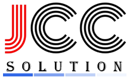

JCC 직원 계정으로 들어갑니다
센서 값은 서버 보관 기간(기본 14일) 안의 것만 있습니다. 경보는 90일까지 보관됩니다.
판넬 온도 기록(지난 4주)으로 주의 기준을 넘거나 가까운 판넬과, 고객이 누른 '냉각 용량 검토 요청'입니다. 원인은 기록 모양으로 추정한 것입니다. 현장에서 발열량(총 발열 = 총 냉각)을 확인한 뒤 공조 점검·교체를 제안하세요.
서버가 매일 한 번 데이터 전체(판넬·경보·점검·계정)를 사본으로 남기고 최근 7일 치를 보관합니다. 한 달에 한 번은 내려받아 회사 PC나 USB에 따로 두세요 — 호스팅에 문제가 생겨도 데이터가 남습니다.
CCM과 그 버스에 물린 센서를 찾습니다.
제품을 고르면 이름·단위·경보값이 채워집니다. Modbus 레지스터는 제품 설명서의 값을 넣으세요. 저장하면 다음 보고 때 CCM이 받아 적용합니다.
통신
경보 기준(비우면 없음)
값 = 원값 × 배율 + 보정값